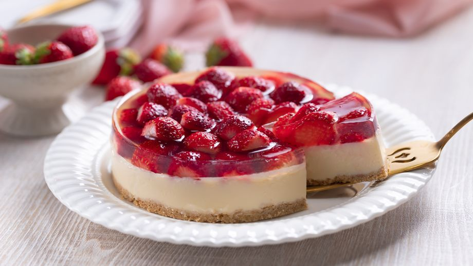

Jahodový cheesecake so želatínou

Svieži koláč zo smotanového syra s korunkou z
čerstvých jahôd a želé.
INGREDIENCIE
Korpus:
- 200g - maslové sušienky
- 80g - maslo
Krém:
- 500g mascarpone
- 150g práškový cukor
- 1 balíček vanilkový cukor
- 1 PL hladká múka (00)
- 200g kyslá smotana (16%)
- 3 ks vajce
Na vrch:
- 200g jahody
- 50ml jahodový sirup
- 200ml voda
- 2PL kryštálový cukor
- 1 balíček červené tortové želé
-
Korpus: sušienky rozmixujeme alebo podrvíme na prach a
zmiešame s roztopeným maslom. Vzniknutú zmes utlačíme na dno tortovej
formy (25 cm), ktorej dno sme vystlali papierom na pečenie a uložíme do
chladničky.
-
Krém: v miske spolu vyšľaháme mascarpone, múku,
práškový a kryštálový cukor do krému. Potom na nižších otáčkach po
jednom primiešame vajcia a nakoniec už len zľahka zapracujeme kyslú
smotanu.
-
Krém navrstvíme na sušienkový korpus a koláč dáme piecť do rúry
vyhriatej na 165ºC na 30 až 35 minút. Rúru vypneme,
pootvoríme dvierka a koláč necháme pomaly vychladnúť v rúre, potom
ďalšiu hodinu pri izbovej teplote a nakoniec ho dáme do chladničky na
aspoň 12 hodín.
-
Na druhý deň si očistíme jahody, prepolíme ich a poukladáme na vrch
stuhnutého koláča.
-
V rajnici zmiešame vodu, sirup, cukor a pridáme tortové želé. Všetko
spolu za stáleho miešania privedieme k varu, povaríme zhruba minútku a
necháme za občasného premiešania krátko vychladnúť (2-3 minúty).
-
Jahody zalejeme teplým želé, necháme ho úplne vychladnúť pri izbovej
teplote a následne cheesecake uložíme do chladničky na ďalšiu hodinu.